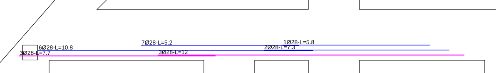

خروجیها¶
نقشهٔ DXF¶
DXF Drawing نقشهٔ آرماتوربندی را بهصورت فایل DXF بر حسب متر ذخیره میکند. این فایل در AutoCAD، AutoCAD LT، BricsCAD و نمایشگرهای رایگان DXF باز میشود و از هر کدام از آنها میتوان آن را بهصورت DWG ذخیره کرد.
نقشه در فضای مدل بهصورت ردیفی از برگهها چیده شده است، هر کدام با پلان فونداسیون، محورها، اندازهگذاری محورها و ستونها:
نام و عرض نوارها
میلگردهای سراسری بالا، جهت X و Y
میلگردهای تقویتی بالا، جهت X و Y
میلگردهای سراسری پایین، جهت X و Y
میلگردهای تقویتی پایین، جهت X و Y
ناحیههای برشی، هاشورخورده بر اساس نوع برشی
کنار هر میلگرد تعداد، قطر و طول آن نوشته شده است، مثلاً 4Ø25-L=4.8، و میلگرد در امتداد خط میانی نوار خود رسم میشود.

میلگردهای تقویتی با دو رنگ رسم میشوند تا بررسی نقشه آسانتر باشد:
آبی (لایههای
Additional Rebar TopوAdditional Rebar Bottom): هر میلگرد یک دستهٔ جداگانه است. میلگردهای مجاور میتوانند روی هم بیفتند، چون طولهای اجرایی آنها از طولهای لازمشان بلندتر است، اما در آنجا به طول وصله نیاز ندارند.ارغوانی (لایهٔ
continuous Rebar): یک میلگرد بلندتر از طول 12 متری شاخه، که از چند قطعه ساخته شده است. جایی که این قطعهها روی هم میافتند، همپوشانی برابر طول وصلهٔ میلگرد است، یعنی 1.3 برابر طول مهاری آن.

پس از برگهها، مقطع هر نوع برشی با خاموتها و برچسب آن میآید،

و سپس جدولها: طولهای وصله، تعداد انواع طول، فهرست قطعات هر نوع میلگرد با شکل و وزن آن، خلاصهٔ وزن و حجم بتن. در پایان نمودارهای لنگر هر نوار آمدهاند، با لنگر مقاوم φMn و لنگر نهایی Mu در طول نوار، بالا و پایین.

فهرست قطعات برای هر طول برش یک ردیف دارد، پس میتواند بیش از تعداد انواع طولی که اجازه دادهاید ردیف داشته باشد: میلگردی بلندتر از 12 متر به چند قطعه بریده میشود و قطعهٔ آخر آن طول خاص خود را دارد. جدول یک نوع میلگرد وقتی فونداسیون هیچ میلگردی از آن نوع ندارد حذف میشود، مثلاً میلگردهای حرارتی.
نمودارهای لنگر فقط فولاد کششی را حساب میکنند، پس φMn کمی کمتر از لنگر مقاوم واقعی است؛ لنگر مقاوم را ببینید.
هر نوع شیء روی لایهٔ خودش قرار دارد، مثلاً Typical Rebar Top، Additional Rebar Bottom، Rebar Text، Dimension، Table یا Moment Resistance، تا بتوان بخشهایی از نقشه را پنهان کرد یا سبکشان را تغییر داد. هر شیء رنگ و ضخامت خطش را از لایهاش میگیرد، پس نقشه در هر حال با ضخامتهای خط درست چاپ میشود: با ضخامت خط لایهها، یا با یک سبک چاپ وابسته به رنگ (CTB) که به هر رنگ ضخامت قلمی میدهد.
زیر برگهها نقشههای برش آمدهاند: یک یا چند برگهٔ عمودی برای هر قطر میلگرد، که نشان میدهند قطعهها چگونه از شاخههای 12 متری بریده شوند. هر ردیف یک الگوی برش است، با تعداد شاخههایی که به آن شکل بریده میشوند، قطعهها که با مقیاس و طولشان رسم شدهاند، پرت (w)، و جایگاه هر قطعه در فهرست قطعات، مثلاً A5 برای ردیف پنجم میلگردهای تقویتی.

نقشهها کمترین تعداد ممکن شاخه را به کار میبرند و هر قطعه دقیقاً به تعداد لازم بریده میشود. آنها با یک برنامهٔ عدد صحیح arc-flow بهطور دقیق حل میشوند که اثبات میکند هیچ نقشهای شاخهٔ کمتری به کار نمیبرد. ابتدا آزادسازی خطی آن حل میشود و تعداد شاخهای که به دست میدهد، گرد شده به بالا، کران پایینی است که تقریباً همیشه همان مقدار بهینه است، پس برنامهٔ عدد صحیح میتواند به محض رسیدن به آن متوقف شود.
خط زیر هر برگه تعداد شاخهها، بهینه بودن اثباتشدهٔ نقشه و پرت را نشان میدهد. اگر محدودیت زمان حلکننده را پیش از اثبات متوقف کند، عبارت «not proven optimal» (بهینه بودن اثبات نشده) را همراه با کمترین تعداد شاخهای که هر نقشهای ممکن است به کار ببرد نشان میدهد. نقشهٔ PDF و Report همین را نشان میدهند.
نقشهٔ PDF¶
PDF Drawing یک کروکی A4 ذخیره میکند: برای هر نوار یک صفحه با میلگردهای تقویتی بالا و پایین آن، و سپس خلاصهٔ وزن، مشخصات فنی، فهرست قطعات و نقشههای برش. این کروکی برای بررسی سریع است؛ نقشهٔ آرماتوربندی همان فایل DXF است.
فایل نتایج و خلاصه¶
Save Results دو فایل مینویسد، مثلاً foundation_calculation.json و foundation_calculation_summary.txt.
خلاصه همان متن کادر Report است، با فایل ورودی و تنظیمات اصلی در ابتدا، و با همهٔ الگوهای نقشههای برش در پایان. این خلاصه برای خواندن و پیوست کردن به گزارش است.
فایل JSON همهٔ آنچه برای بازتولید یا پردازش بعدی نتیجه لازم است را در خود دارد:
کلید |
محتوا |
|---|---|
|
نسخهٔ OPTiBAR که نتیجه را تولید کرده است. |
|
تاریخ و زمان ذخیره. |
|
پایگاه دادهٔ SAFE که پروژه از آن بارگذاری شده است. |
|
|
|
تنظیمات محاسبه. |
|
خروجی موتور محاسبه؛ پایینتر را ببینید. |
برای یک محاسبه، result یک کلید data با جزئیات فونداسیون دارد، و warnings وقتی هشداری وجود داشته باشد. وقتی تعداد انواع طول برای شدنی بودن خیلی کم باشد، result یک کلید errors با min_feasible_num دارد، یعنی کوچکترین تعداد کل انواع طول که کار میکند.
بخشهای اصلی result["data"] عبارتاند از:
کلید |
محتوا |
|---|---|
|
وزن میلگرد بر حسب تن به تفکیک نوع و تراز، و حجم بتن بر حسب m³. |
|
فهرست قطعات میلگردهای سراسری، حرارتی و تقویتی و میلگردهای برشی: قطر، طول، تعداد و خمها. |
|
برای هر نوار: هندسه، میلگردهای هر ردیف با ایستگاههای اجرایی و خمهایشان، ناحیههای برشی و نمودارهای لنگر. |
|
مصالح، پوششها، طولهای ویژه برای هر قطر، و تعداد انواع طول بهکاررفته. |
|
آرایشهای برشی: قطر، تعداد شاخهها و فاصله. |
|
مرز فونداسیون، بازشوها، ستونها و محورها. |
|
نقشهٔ برش هر قطر: طول شاخه، تعداد شاخهها، پرت، اینکه آیا نقشه بهینهٔ اثباتشده است ( |
برای یک تحلیل، result فهرستی از بخش data هر ترکیب است، یا {} برای ترکیبی که شدنی نیست.
جدولهای خروجی¶
Export… نتایج را به صورت جدول ذخیره میکند، برای یک صفحهگسترده یا برنامهای دیگر. نوع فایل، قالب را تعیین میکند:
Excel workbook (
.xlsx): یک برگه برای هر جدول، با سطر عنوان ثابت و فیلترهای فعال. در Google Sheets و LibreOffice Calc هم باز میشود.CSV files (
.zip): یک فایل zip با یک فایل CSV برای هر جدول، شمارهگذاریشده به ترتیب زیر، مثلاً02_mass_summary.csv. فایلها UTF-8 هستند، پس Excel نویسههای Ø و ³ را درست نشان میدهد.JSON tables (
.json):meta، وtablesبا ستونهای هر جدول، هر کدام با نام و واحدش، و سطرها به صورت شیءهایی با کلید نام ستون. برخلاف فایل نتایج، این فایل جدولها را نگه میدارد، نه خروجی موتور محاسبه را.
مقادیر عدد هستند نه متن، پس میتوان آنها را جمع زد و مرتب کرد؛ واحدها در عنوان ستونها آمدهاند، مثلاً Length (m). خانهٔ خالی یعنی آن مقدار کاربرد ندارد، مثلاً وزن بالای میلگردهای برشی. برگهٔ اول، یا 00_about.csv، میگوید فایل را کدام نسخهٔ OPTiBAR، چه زمانی و از کدام فایل ورودی ساخته است، و اینکه یک محاسبه است یا یک تحلیل.
برای یک محاسبه، جدولها عبارتاند از:
جدول |
محتوا |
|---|---|
تنظیمات |
همهٔ تنظیمات محاسبه، با واحدشان. |
Mass Summary (خلاصهٔ وزن) |
وزن میلگرد بر حسب t به تفکیک نوع، بالا و پایین، و مجموع. |
Typical Rebars, Thermal Rebars, Additional Rebars (میلگردهای سراسری، میلگردهای حرارتی، میلگردهای تقویتی) |
فهرستهای قطعات: موقعیت ( |
Shear Rebars (میلگردهای برشی) |
فهرست قطعات خاموتها: موقعیت ( |
Shear Types (انواع برشی) |
آرایشهای برشی: قطر، تعداد شاخهها و فاصله. |
Cutting Plans (نقشههای برش) |
برای هر قطر: طول شاخه، تعداد شاخهها، اینکه آیا نقشه بهینهٔ اثباتشده است، کمترین تعداد شاخهای که هر نقشهای ممکن است به کار ببرد، پرت و تعداد الگوها. |
Cutting Patterns (الگوهای برش) |
هر الگو: تعداد شاخههایی که باید به این شکل بریده شوند، قطعههایش با موقعیتشان، طول استفادهشده و پرت. |
Bars (میلگردها) |
تکتک میلگردهای هر نوار: نوار، تراز، سراسری یا تقویتی، ردیف، تعداد، قطر، ابتدا و انتها در امتداد نوار، طول، خمها، و اینکه آیا از چند قطعه وصله شده است (هر قطعه در یک سطر). |
Shear Zones (ناحیههای برشی) |
هر ناحیهٔ برشی: نوار، نوع برشی، ابتدا، انتها و طول. |
Specifications (مشخصات) |
مقاومت بتن و فولاد، پوششها، تعداد انواع طول و حجم بتن. |
Rebar Specifications (مشخصات میلگردها) |
برای هر قطر: طول خمها، طولهای مهاری و طولهای وصله، بالا و پایین. |
Warnings (هشدارها) |
هشدارهای گزارش: هشدار، نوار، تراز، مقدار و حد آن. |
وقتی تعداد انواع طول برای شدنی بودن خیلی کم باشد، فایل Settings و Errors را دارد، با کوچکترین تعداد کل انواع طول که کار میکند.
برای یک تحلیل، فایل Settings و Analysis را دارد: یک سطر برای هر ترکیب Stack (دسته) و Total با وزن میلگردهای سراسری، میلگردهای حرارتی و میلگردهای تقویتی، مجموع آنها، و میلگردهای برشی. ترکیبی که شدنی نیست وزنی ندارد.